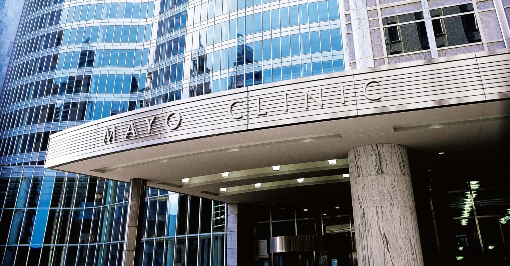
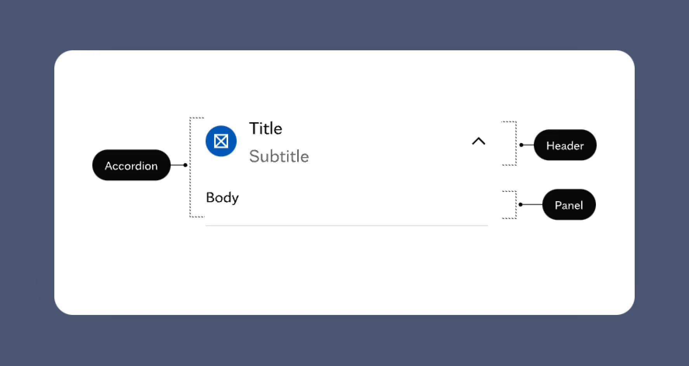
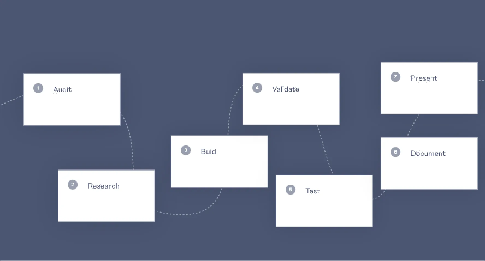
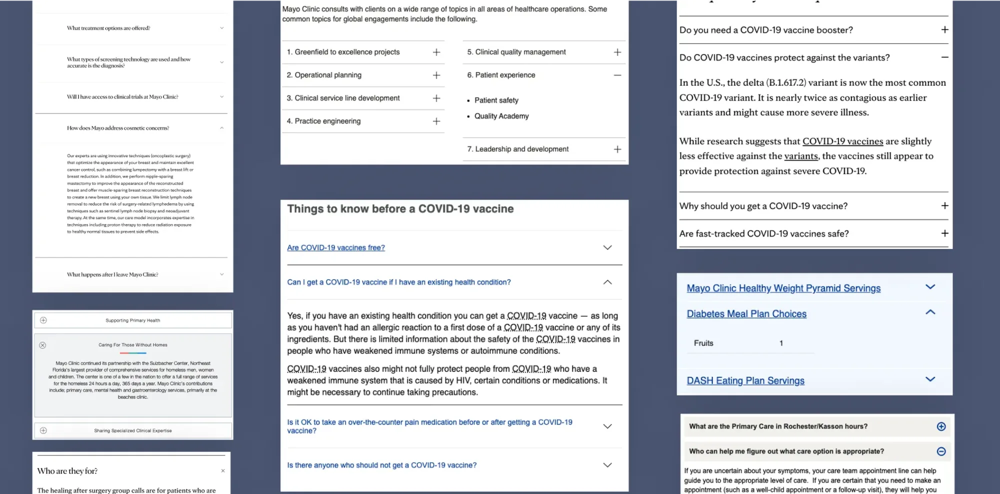
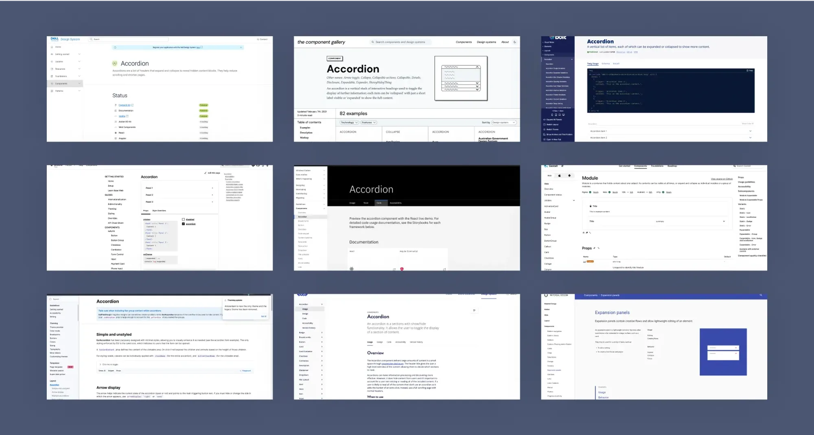
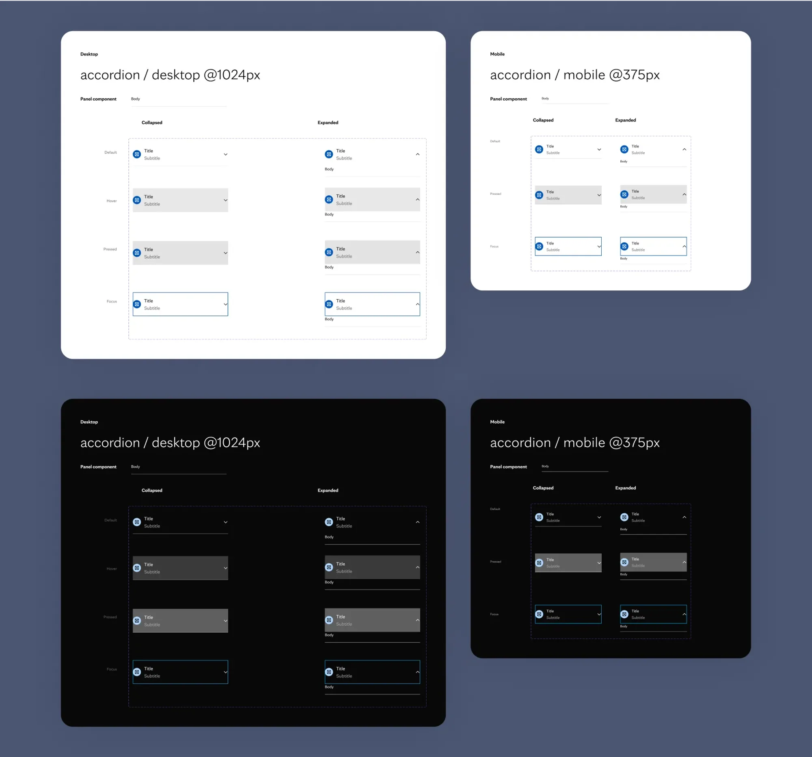
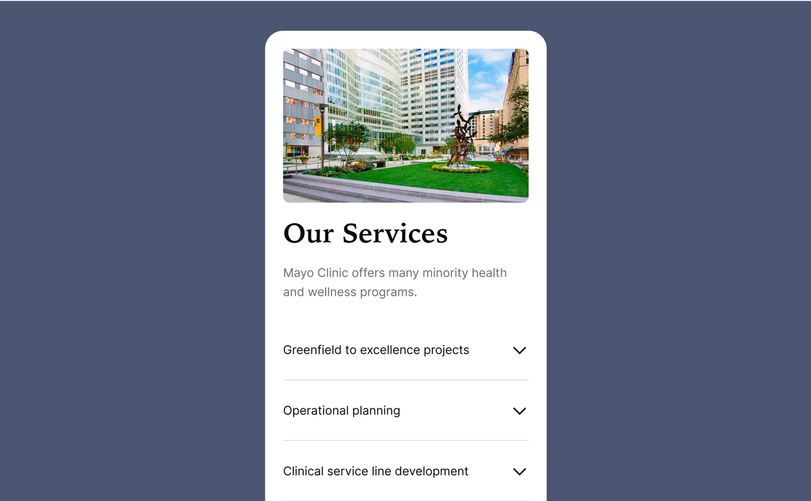
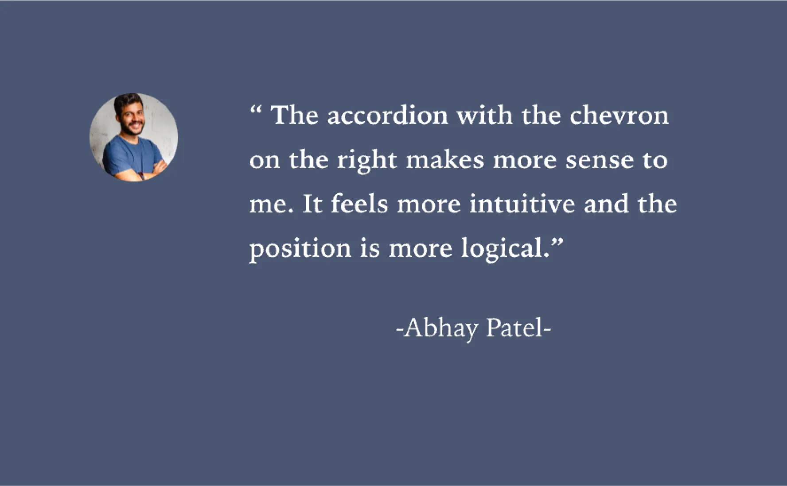
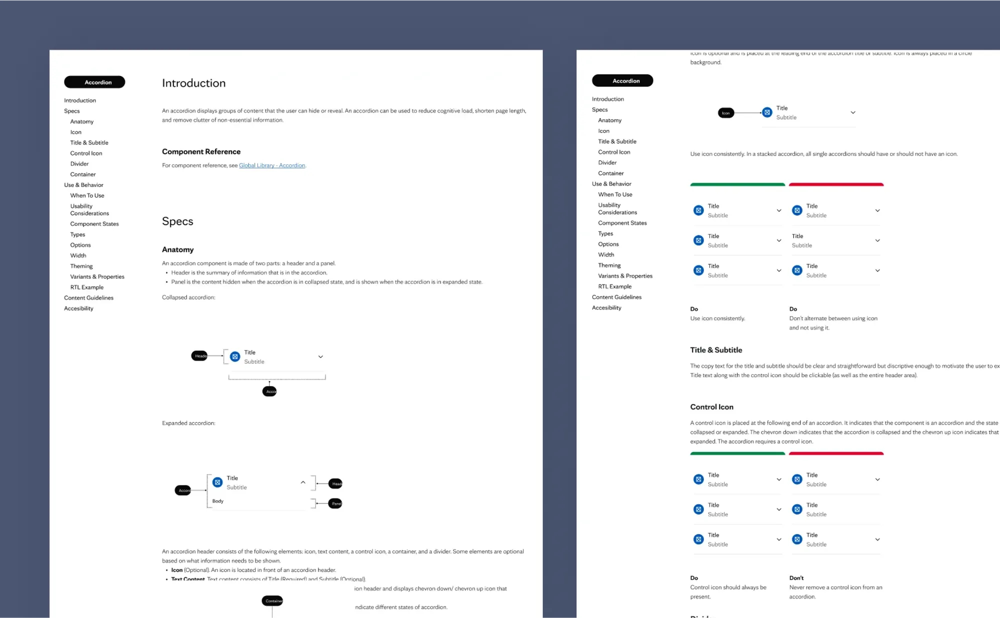
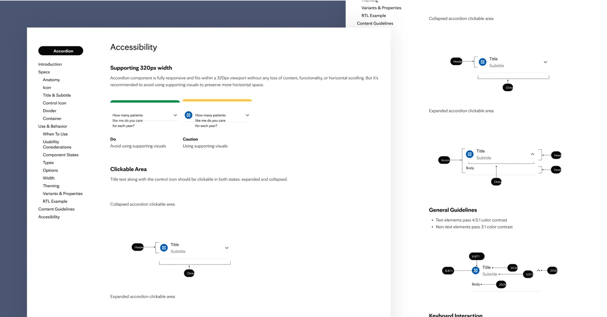

Mayo Clinic
Exploring my process of creating Mayo Clinic Design System components, with real examples throughout.
Overview
In this case study, I will show and explain my process of creating components for Mayo Clinic Design System. I will share real examples every step of the way.
Background
I was a part of Mayo Clinic Design Systems team and was responsible for creating highly polished Figma components for Mayo Clinic Design System, testing and validating them among designers and engineers, writing documentation, and delivering to engineers for implementation.
About Mayo Clinic
Mayo Clinic is a nonprofit organization committed to clinical practice, education, and research, providing expert, whole-person care to everyone who needs healing.
Mayo Clinic defines quality as a comprehensive look at all patient experience aspects including technology.

Task
I created a dozen of components for Mayo Clinic Design System, and I’m going to take you through the process of making one – accordion.

Challenge
While creating Figma components, some of the challenges were to ensure that components are built based on highest standards, scalable and flexible enough to cover multiple use cases, follows WCAG accessibility guidelines, consistent with the rest of the components, and supports localization.
- Highest standards. Build components that are simple, intuitive, and easy to use.
- Scalable and flexible. Make sure components are scalable and could be extended in the future to support multiple use cases.
- Consistency. Achieve consistency between components across Mayo Clinic products.
- Accessibility. Design components that meet Web Content Accessibility Guidelines (WCAG) requirements
- Documentation. Provide robust documentation that leaves no questions how to use, and more importantly, how not to use components.
- Localization. Mayo Clinic is a global company. It exists in 7 countries with different languages and different cultures. With this in mind, the goal was to create components that would work in other languages (including RTL).
Process
I’ll take Accordion component as an example to walk you through the process.
There were 2 big phases of building a component: design and implementation. The design phase was not a linear process even though it might look like it. It required a lot of back and forth collaboration between designers and developers, multiple iterations, and testing.
If I simplify the process, it will include the following steps: Audit, Research, Build, Validate, Document, and Present.

Audit
It all starts with the audit. The audit of the internal inventory allowed me to learn everything about the accordion that’s available in the product today. I was collecting a bunch of screenshots across the products to understand the use cases, revealing inconsistencies, and highlighting various issues: usability, accessibility, and others.

Research
After the audit had been done, I did an external audit or research to learn everything about the accordion and its best practices in other popular Design Systems. I also learned what other companies did with common issues by reading research articles.
☝️ PRO Tip: There is a great resource component.gallery where you can type a component name and get an overview of the component across multiple popular design systems.

Build
When the research was completed I started to properly build an accordion component. At that time I had a collection of use cases and the best practices in my pocket.
I spoke to developers first to ensure that properties of the component and naming convention make sense from code perspective.
I used variants and components props to create a robust component that is aligned to code implementation as much as possible.

Validate
After the accordion had been built it was time to validate it. It’s a mandatory step to ensure all edge-cases are covered and the component itself fits the context.
I applied this component to different scenarios in quick-designed illustrative pages.
A design critique session was organized to get designers’ and developers’ feedback, to make sure I did not miss any edge cases. Another critique session was organized with the Mayo Clinic team to learn their opinion.
As a result of the critique session, there was some feedback that required testing (we’ll talk about it in a moment).

Test
A/B and Usability tests were performed to decide on whether to use a chevron icon or a plus icon on the leading end or the following end of the accordion component.
Users had a strong preference towards an accordion with a chevron icon on the following end (version B). The chevron icon felt more natural to them and the position was more logical.
Based on the testing results, recommendations were to use chevron icon on the following end of the accordion.

Document
When the testing results were ready and the team approved the final decision I documented all the knowledge about the accordion.
Documentation is crucial for design system adoption. It consolidates usage guidelines to help developers, designers, PMs and other stakeholders ship predictable UIs.
I documented everything from high-level usage guidelines and specs to accessibility standards.
- Description of the component, its name and what it does.
- Anatomy and Specs that include sizes, spacing, and naming convention.
- Examples illustrating the component’s variants, states. Users prefer rendered code that they can interact with instead of static images.
- Design reference including visual guidelines, responsive behavior, when to use a component, and do’s and don’ts.
- Content and Accessibility Guidelines

Accessibility
Accessible design not only helps users with disabilities; it provides better user experiences for everyone.
Figma is pretty limited when it comes to accessibility. Documentation is a unique opportunity to document accessibility and inclusion requirements of the component, both from a UI/UX design perspective, and from a code repository perspective.
The accordion needed to be properly built considering the following accessibility WCAG 2.1 standards
- Screen readers must properly read the label
- Keyboard navigation must be supported
- Proper content guidelines
- Localizations support
- Labels must be dynamic to allow us to translate them into different languages
- Accessible error handling: avoid relying on a color by itself to indicate a component validation error

Present
The final step was a presentation. The accordion updates, final decision, and documentation details were presented to a large team of designers, developers, and managers.
Key Learnings
Creating a consistent but flexible and scalable component with accessibility in mind is challenging. However, it’s doable if following things are considered:
- Collaboration with designers and developers is a key
- Design in the real context and consider real use cases
- Test, test, and… test!
- Documentation is the key to adaption and the best way to ensure the component will be implemented properly.
- Iterations are ok. Don’t assume you’ll do everything perfect first time.
Thank you for reading!